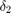
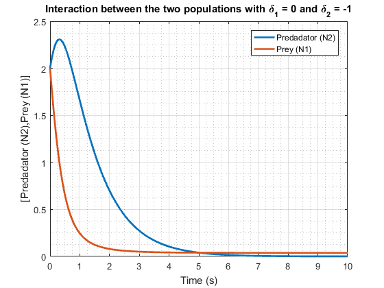
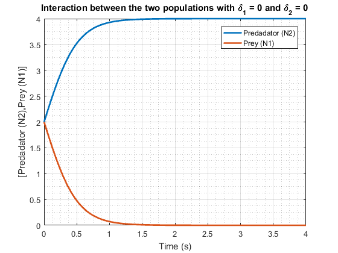
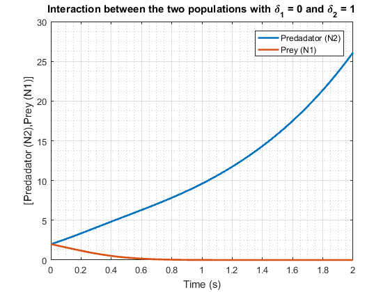
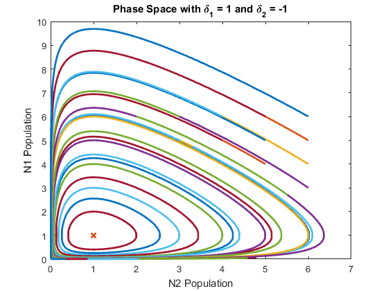
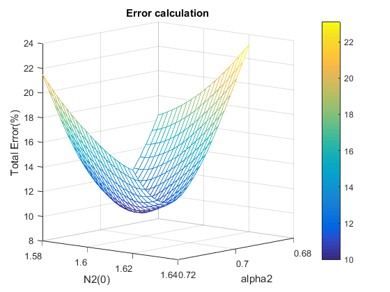

Study of populations
Here we evaluate a a physhical model of a car going forward taking in account different values of the contant of time which is given by the friction constant divided by mass
Contents
Load model
function pop
close all; %Load file in system memory file='popul'; load_system(file);
Variable Definition
StopTime='4'; N1_init='2'; N2_init='2'; alpha1=1; alpha2=1; legenda1='Predadator (N2)'; legenda2='Prey (N1)'; xaxe='Time (s)'; yaxe='[Predadator (N2),Prey (N1)]'; %Define strings to input into model
2.1
Simulations with and for various values of  and
and 
2.2
With we evaluate the different types of evolution considering various values for and 
mod=sim_plot(alpha1,alpha2,'10','0.0001',N1_init,N2_init,file,-1,-1); tittle='Interaction between the two populations with \delta_1 = -1 and \delta_2 = -1'; plot_pop(mod,tittle,legenda1,legenda2,xaxe,yaxe);

and osccilates
mod=sim_plot(alpha1,alpha2,StopTime,'0.0001',N1_init,N2_init,file,-1,0); tittle='Interaction between the two populations with \delta_1 = -1 and \delta_2 = 0'; plot_pop(mod,tittle,legenda1,legenda2,xaxe,yaxe);

and equilibrium
mod=sim_plot(alpha1,alpha2,'2','0.0001',N1_init,N2_init,file,-1,1); tittle='Interaction between the two populations with \delta_1 = -1 and \delta_2 = 1'; plot_pop(mod,tittle,legenda1,legenda2,xaxe,yaxe);

mod=sim_plot(alpha1,alpha2,'10','0.0001',N1_init,N2_init,file,0,-1); tittle='Interaction between the two populations with \delta_1 = 0 and \delta_2 = -1'; plot_pop(mod,tittle,legenda1,legenda2,xaxe,yaxe);
and osccilates
mod=sim_plot(alpha1,alpha2,StopTime,'0.0001',N1_init,N2_init,file,0,0); tittle='Interaction between the two populations with \delta_1 = 0 and \delta_2 = 0'; plot_pop(mod,tittle,legenda1,legenda2,xaxe,yaxe);
and equilibrium
mod=sim_plot(alpha1,alpha2,'2','0.0001',N1_init,N2_init,file,0,1); tittle='Interaction between the two populations with \delta_1 = 0 and \delta_2 = 1'; plot_pop(mod,tittle,legenda1,legenda2,xaxe,yaxe);
mod=sim_plot(alpha1,alpha2,'10','0.0001',N1_init,N2_init,file,1,-1); tittle='Interaction between the two populations with \delta_1 = 1 and \delta_2 = -1'; plot_pop(mod,tittle,legenda1,legenda2,xaxe,yaxe);

 and osccilates
and osccilates
mod=sim_plot(alpha1,alpha2,StopTime,'0.0001',N1_init,N2_init,file,1,0); tittle='Interaction between the two populations with \delta_1 = 1 and \delta_2 = 0'; plot_pop(mod,tittle,legenda1,legenda2,xaxe,yaxe);

and equilibrium
mod=sim_plot(alpha1,alpha2,'2','0.0001',N1_init,N2_init,file,1,1); tittle='Interaction between the two populations with \delta_1 = 1 and \delta_2 = 1'; plot_pop(mod,tittle,legenda1,legenda2,xaxe,yaxe);
2.3
To confirm equilibrium we need to assure that and , so ploting the case where the populations osccilate i.e for every with
n1V=[1 2 3 4 5 6]
n2V=[1 2 3 4 5 6]
[X,Y]=meshgrid(n1V,n2V);
figure
grid on;
grid minor;
for k=1:6
for j=1:6
mod=sim_plot(alpha1,alpha2,'10','0.0001',X(k,j),Y(k,j),file,1,-1);
N2p=mod.get('dataN2');
N1p=mod.get('dataN1');
plot(N1p,N2p,'linewidth',2);
hold on;
xlabel('N2 Population');
ylabel('N1 Population');
title('Phase Space with \delta_1 = 1 and \delta_2 = -1','Interpreter','tex');
end
end
mod=sim_plot(alpha1,alpha2,'10','0.0001',1,1,file,1,-1);
N2p=mod.get('dataN2');
N1p=mod.get('dataN1');
plot(N1p,N2p,'x','linewidth',2);
hold off
%Por acabar
n1V =
1 2 3 4 5 6
n2V =
1 2 3 4 5 6
 comentar que temos sempre o equilibrio se o ponto de equilibrio for satisfeito
2.4 a)
Here we plot presas.mat togeter with our best guess of values for the predadotr evolution
mod=sim_plot(1.4,0.71,'20','0.0001','4','1.47',file,3.1,-1.5); %plot_pop(mod,tittle,legenda1,legenda2,xaxe,yaxe); prey=load('presas.mat'); h=plot(prey.tr,prey.yr,'linewidth',2); N1=mod.get('dataN1'); clk=mod.get('clock'); hold on; h1=plot(clk,N1,'linewidth',2); grid on; grid minor; xlabel('Time (s)'); ylabel('N1 Population'); title('Approximation by visual guidance','Interpreter','tex'); legend([h,h1],'N1 given by file','N1 by visual approximation'); hold off

We can see by the maximum values of presas.mat that our values for the predadator function are a good estimate of the real ones
2.4 b)
%Get linear spaced values for variables (400 iterations using 20 by 20 linear spaced) alpha2_t=linspace(0.68,0.72,20); N2_t=linspace(1.58,1.62,20); [X,Y]=meshgrid(alpha2_t,N2_t); %Z matrix contains the total error for each point of the grid Z = error_matrix(alpha2_t,N2_t); %Plot mesh figure h=figure; create_mesh(h,X,Y,Z); %made by righ clicking the figure (../get code) because i rotated it to get a better view %Get the min error value and index I=find(Z==min(min(Z))); Zmin=min(min(Z)); N2_init=num2str(Y(I)); alpha_2=num2str(X(I)); %Plot both prey evolution plot mod=sim_plot(1.4,alpha_2,'20','0.0001','4',N2_init,file,3.1,-1.5); N1=mod.get('dataN1'); clk=mod.get('clock'); figure %plot presas.mat h=plot(prey.tr,prey.yr,'linewidth',2); hold on; %plot sim and label h1=plot(clk,N1,'linewidth',2); xlabel('Time (s)'); ylabel('N1 Population'); title('Approximation by brute force','Interpreter','tex'); legend([h,h1],'N1 given by file','N1 by approximation'); grid on; grid minor; hold off; %Get min value of error and point X,Y N2_init=num2str(Y(I)); alpha_2=num2str(X(I)); Zmin_str=num2str(Zmin); message=sprintf('By this method, using 400 iterations we get N(0)=%s and alpha_2 =%s as our best values for aproximation, with a total error of %s',N2_init,alpha_2,Zmin_str); disp(message);
By this method, using 400 iterations we get N(0)=1.5968 and alpha_2 =0.70105 as our best values for aproximation, with a total error of 9.9726
Using brute force iterations we see that we can get a really good approximation. But if we didnt knew the interval on where alpha2 and N2init were, we would get much more iteration. This method is not viable (continue)
2.4 c)
Optimization usig fminsearch
%x0 = initial values to begin optimization algorithm, fminsearch returns %the solution fval (error in our case), x(1) and x(2) corresponding to %N2_init and alpha_2 x0=[0.68;1.58]; options=optimset('Display','final'); [x,fval,exitflag,output]=fminsearch(@algorithm1,x0,options); %get number of iterations it needed to find the min value iterations=output.iterations fval_str=num2str(fval); message=sprintf('By this method using 28 iterations we get N(0)=%s and alpha_2 =%s as our best values for aproximation, with a total error of %s',x(2),x(1),fval_str); disp(message); %plot both prey evolution plots N2_init=num2str(x(2)); alpha_2=num2str(x(1)); mod=sim_plot(1.4,alpha_2,'20','0.0001','4',N2_init,file,3.1,-1.5); N1_f=mod.get('dataN1'); clk_f=mod.get('clock'); figure h=plot(prey.tr,prey.yr,'linewidth',2); hold on h2=plot(clk_f,N1_f,'linewidth',2); xlabel('Time (s)'); ylabel('N1 Population'); title('Approximation using optimization algorithm','Interpreter','tex'); legend([h,h2],'N1 given by file','N1 by approximation'); grid on; grid minor; hold off; result=Zmin-fval; if result<0 message=sprintf('Brute force iteration gives a better result with a difference of %f on the total error',result) elseif result > 0 message=sprintf('fminsearch gives a better result with a difference of %f on the total error',result) else message=sprintf('Both methonds give the same result, given the %f difference on the total error',result) end
Optimization terminated:
the current x satisfies the termination criteria using OPTIONS.TolX of 1.000000e-04
and F(X) satisfies the convergence criteria using OPTIONS.TolFun of 1.000000e-04
iterations =
28
By this method using 28 iterations we get N(0)=1.598157e+00 and alpha_2 =7.012891e-01 as our best values for aproximation, with a total error of 9.9689
message =
fminsearch gives a better result with a difference of 0.003666 on the total error
2.4 c)
Comparing the 2 methods
figure h=plot(prey.tr,prey.yr,'o','linewidth',2); %presas.mat plot hold on; h2=plot(clk_f,N1_f,'linewidth',2); %fminsearch plot h1=plot(clk,N1,'linewidth',2); %brute force plot grid on; grid minor; hold off
Using the optimization algorithm fminsearch we can get the same approximate values by apllying 14 times less iterations
end function mod = sim_plot(alpha1,alpha2,StopTime,Step,N1_init,N2_init,file,delta1,delta2) delt1=num2str(delta1); term1_N1=strcat(delt1,'*u(1)'); alpha1=num2str(alpha1); aux=strcat('-',alpha1); term2_N1=strcat(aux,'*u(1)*u(2)'); prey_fcn=strcat(term1_N1,term2_N1); delt2=num2str(delta2); term1_N2=strcat(delt2,'*u(2)'); alpha2=num2str(alpha2); aux2=strcat('+',alpha2); term2_N2=strcat(aux2,'*u(1)*u(2)'); pred_fcn=strcat(term1_N2,term2_N2); N1_init=num2str(N1_init); N2_init=num2str(N2_init); set_param(file,'StopTime',StopTime); set_param('popul/Integrator','InitialCondition',N1_init); set_param('popul/Integrator1','InitialCondition',N2_init); set_param('popul/Fcn1','Expr',prey_fcn); set_param('popul/Fcn2','Expr',pred_fcn); set_param(file,'FixedStep',Step); mod=sim(file,'SimulationMode','Normal'); end function plot_pop(mod,tittle,legenda1,legenda2,xaxe,yaxe) clk=mod.get('clock'); N2=mod.get('dataN2'); N1=mod.get('dataN1'); V=figure; h=plot(clk,N2,'linewidth',2); hold on; h1=plot(clk,N1,'linewidth',2); xlabel(xaxe); ylabel(yaxe); title(tittle,'Interpreter','tex'); legend([h,h1],legenda1,legenda2); grid on; grid minor; hold off end function Z = error_matrix(alpha2_t,N2_t) [X,Y]=meshgrid(alpha2_t,N2_t); sz=size(X); Z=zeros(sz(1),sz(2)); h = waitbar(0,'Please wait...'); for i=1:sz(1) msg=num2str(i); for j=1:sz(2) %messagge box msg1=num2str(j); msg1=strcat(msg1,' out of 20'); str=strcat(msg,' out of 20 / '); str=strcat(str,msg1); waitbar(i/sz(1),h,str); %sim and ge error x(2)=Y(i,j); x(1)=X(i,j); Z(i,j)=algorithm1(x); end end close(h) end function total_error= algorithm1(x) prey=load('presas.mat'); mod=sim_plot(1.4,x(1),'20','0.1','4',x(2),'popul',3.1,-1.5); N1=mod.get('dataN1'); total_error=0; for i=1:size(prey.yr) erro= abs(prey.yr(i)-N1(i)); total_error=total_error+erro; end end % function dispIteration() function create_mesh(Parent1, xdata1, ydata1, zdata1) %CREATEAXES(PARENT1, XDATA1, YDATA1, ZDATA1) % PARENT1: axes parent % XDATA1: surface xdata % YDATA1: surface ydata % ZDATA1: surface zdata % Auto-generated by MATLAB on 29-Mar-2018 16:10:25 % Create axes axes1 = axes('Parent',Parent1); hold(axes1,'on'); % Create mesh mesh(xdata1,ydata1,zdata1,'Parent',axes1); % Create xlabel xlabel('alpha2'); % Create zlabel zlabel('Total Error(%)'); % Create title title('Error calculation'); % Create ylabel ylabel('N2(0)'); colorbar; view(axes1,[130.5 8.4000000000001]); grid(axes1,'on'); end